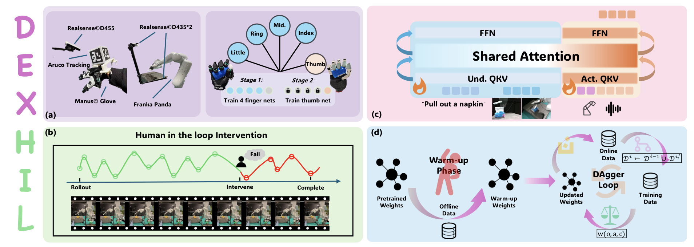

While Vision-Language-Action (VLA) model has demonstrated promising generalization capabilities in robotic manipulation, deploying them on specific and complex downstream tasks still demands effective post-training. In parallel, Human-in-the-Loop (HiL) learning has proven to be a powerful mechanism for refining robot policies. However, extending this paradigm to dexterous manipulation remains challenging: multi-finger control is high-dimensional, contact-intensive, and exhibits execution distributions that differ markedly from arm motion, leaving existing dexterous VLA systems limited in reliability and adaptability. We present DexHiL, the first integrated arm-hand human-in-the-loop framework for dexterous manipulation VLA, enabling coordinated interventions over the arm and the dexterous hand within a single system. DexHiL introduces an intervention-aware data sampling strategy that prioritizes corrective segments for post-training, together with a lightweight teleoperation interface that supports instant human corrections during execution. Real-robot experiments demonstrate that DexHiL serves as an effective post-training framework, yielding a substantial performance leap that outperforming standard offline-only finetuning baselines by an average of 25% in success rates across distinct tasks.

DexHiL integrates a lightweight arm-hand teleoperation interface with an intervention-aware post-training pipeline. The system maps global arm motion via ArUco tracking and retargets finger articulations via a two-stage network to support instant human corrections.
We evaluated DexHiL on two complex contact-rich tasks: Tissue Extraction and Plush Toy Grasping. Our method consistently outperforms baselines, achieving a 95% success rate in Tissue Extraction and 65% in Plush Toy Grasping by the third iteration round.
@inproceedings{han2026dexhil,
title = {DexHiL: A Human-in-the-Loop Framework for Vision-Language-Action Model Post-Training in Dexterous Manipulation},
author = {Han, Yifan and Chen, Zhongxi and Zhao, Yuxuan and Xu, Congsheng and Shao, Yanming and Peng, Yichuan and Mu, Yao and Lian, Wenzhao},
journal = {arXiv preprint arXiv:2603.09121},
year = {2026}
}